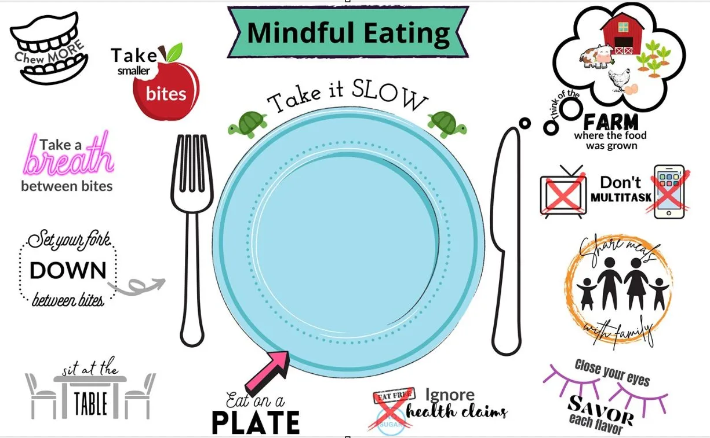
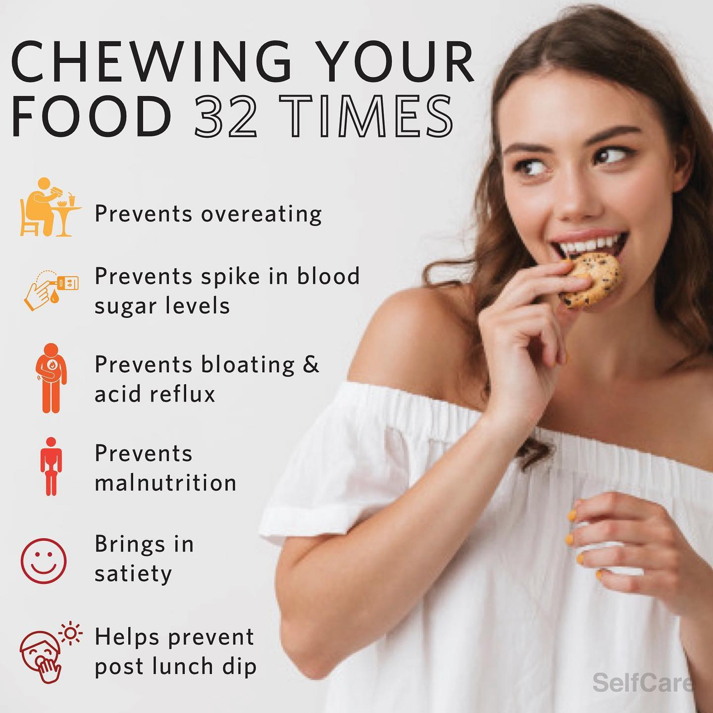

How You Eat is More Important Than What You Eat
These simple life skills can help you live and eat in a more mindful, pleasant way.


Eat 70% Raw, 30% Cooked
Incorporate a mix of raw and lightly cooked foods for better nutrient absorption. Aim for 70% of your meals to be fresh and raw to retain more vitamins and enzymes.
"Therefore, eat not anything which fire, or frost, or water has destroyed. For burned, frozen, and rotted foods will burn, freeze, and rot your body also."
Always Rest After a Grain Meal
Give your body time to digest by resting after a meal, especially one that includes grains, which require more energy to process.
"Work and digestion must be kept apart, so there may be no competition between them."
Never Overeat
Overeating can be harmful to health. Leave the table feeling slightly hungry to maintain balance and give your body time to process.
"And when you eat, never eat unto fullness... always eat less by a third."
Eat Only When You’re Hungry
Eat only when your body truly needs fuel, not out of habit or boredom. Listen to your body's natural hunger signals.
Eat a Light Breakfast
Start the day with a simple, light breakfast. This supports the body's natural energy rhythms and ensures effective digestion.
Always Eat in a Relaxed State
Eating in a calm, relaxed environment helps your body to digest food effectively and supports overall wellness.
"Sleep is not a hunger-inducing process."
Don’t Mix Too Much Together
Limit the variety of foods in a single meal to improve digestion. Avoid combining incompatible foods, like fruits and starches.
"Be content with two or three sorts of foods, which you will find always upon the table of our Earthly Mother."
Eat Neither Too Cold Nor Too Hot
Avoid extremes in temperature; food should be served warm or at room temperature for optimal digestion.
Eat Seasonal, Regional, and Reasonable
Choose local and seasonal foods, as they are better suited to your body's needs and environment.
"Eat not unclean foods brought from far countries, but eat always that which your trees bear."
Chew, Chew, Chew
Thoroughly chew each bite to make it easier for your body to digest. The more you chew, the less you need to eat to feel satisfied.
Chew Thoroughly: Practice mindful chewing by taking the time to chew each bite thoroughly.: According to recent studies food should be chewed about 32 times, foods that are harder to chew, such as steak and nuts may need up to 40 chews per mouthful. For foods that are softer such as mashed potato and watermelon you can get away with chewing just 5-10 times.

"Nature will castigate those who do not masticate."